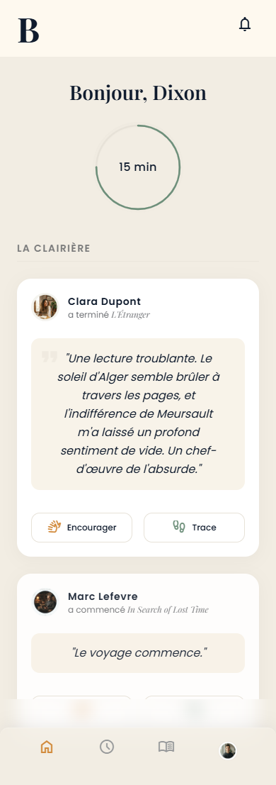

Lisez à votre rythme
Lancez une session, avancez sans pression et regardez votre régularité prendre forme naturellement.
Votre compagnon de lecture
BOO-P garde la mémoire des livres qui vous transforment. Suivez votre rythme, capturez ce qui vous touche et dessinez, lecture après lecture, votre propre sentier.
Un espace calme, sans notes publiques ni course aux likes.

Une autre manière de lire
Une phrase vous accompagne. Une idée déplace votre regard. Une histoire reste longtemps après avoir refermé le livre.
BOO-P recueille ces moments sans interrompre la lecture, pour que votre bibliothèque raconte enfin autre chose qu’une liste : votre histoire de lecteur.
Le geste BOO-P
Trois gestes simples pour transformer la lecture en une mémoire vivante.
Lancez une session, avancez sans pression et regardez votre régularité prendre forme naturellement.
Dictez une pensée, gardez une citation ou nommez une émotion sans sortir de votre moment de lecture.
Retrouvez les livres, les idées et les transformations qui ont construit votre identité de lecteur.
« Le livre se referme.
La trace, elle, demeure. »
Pensé pour la profondeur
Un chronomètre discret et un objectif doux pour soutenir l’habitude, pas la performance.
Votre pensée devient une Trace reliée au bon livre et à la bonne page.
Chaque exemplaire conserve la mémoire des lecteurs et des idées qu’il a fait circuler.
Encouragez la régularité et partagez une réflexion, sans classement ni popularité.
« Chaque livre laisse une trace.
Le manifeste BOO-P
Chaque lecteur laisse une trace dans le livre. »

Votre sentier vous attend
Commencez avec trois livres qui comptent déjà pour vous. BOO-P dessinera les premiers pas de votre histoire de lecteur.